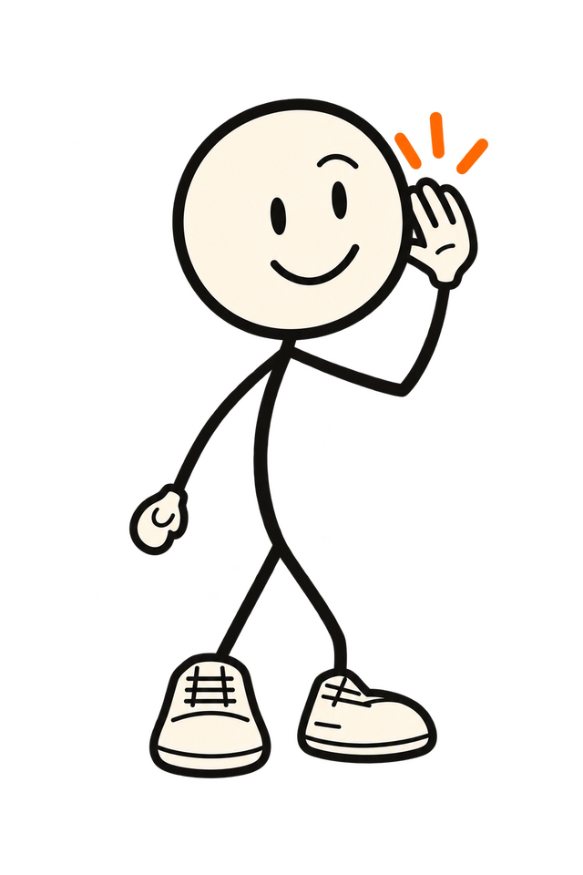

Got a problem? Ask Doddy.
What can Doddy do? Quite a lot, actually.
Ten random moments from an ordinary day, and what a mate in your pocket does with them. Pick one.
Scripted demonstrations. Each one says whether it's built, in testing, or later, maybe.

09:41▮▮▮
Doddy
ListeningDoddy, what's happening today?
Well, your meeting started 15 minutes ago. Excellent start.
Today
- Team meeting09:00 · started
- Dentist12:30
- Call Mum19:00
Want me to draft a "running late" to Ola? You send it.
Yes, draft itNot now
Talk to DoddyAa
Scripted demonstration · Calendar and messages: in testing